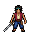

Teste frontal para avaliação visual. Os sprites-base do jogo continuam preservados.

5 frames retornados · a espada abaixa durante o ciclo
7 frames retornados · o retorno à guarda precisa de ajuste
As prévias repetem os frames na ordem original. O ataque repete para facilitar a inspeção; no combate, a intenção é executá-lo uma vez por golpe.